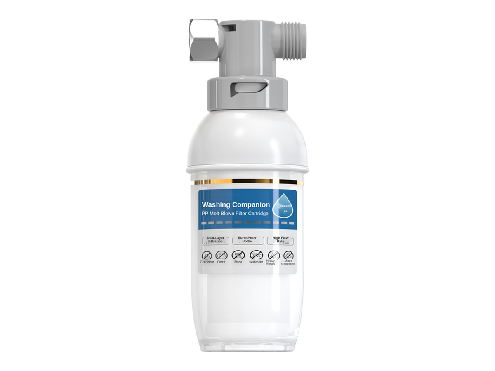

淋浴
淋浴RP-S01
手持式淋浴过滤器
SKU: RP-S01
起订量：询价时确认

淋浴过滤器
淋浴过滤系统 (JK-S2) — 单支或多支装
RP-S14 与 RP-S13 为同一款淋浴过滤系统，规格完全相同。RP-S14 为单支装；RP-S13 为多支装。规格按型号及订单确认。
单支或多支装 — 亦可按 RP-S13（多支装） 报价。
电压／频率可按目标国家配置，其他配置按订单确认。
将鼠标悬停在款式图片上查看对应参数。触屏设备请点按图片。

ROPureOEM 目录中的 7 行规格。
| 规格 | RP-S14-1 — 单支装 (JK-S2) | RP-S14-2 — 多支装 (JK-S1) |
|---|---|---|
| 额定流量 | 8 L/min | 8 L/min |
| 过滤精度 | 40 µm | 40 µm |
| 水温 | 5-50°C | 5-50°C |
| 工作压力 | 0.1-0.4 MPa | 0.1-0.4 MPa |
| 额定水量 | 12000 L | 12000 L |
| 滤芯选项 | PP / PP + 亚硫酸钙 / 炭块 | PP / PP + 亚硫酸钙 / 炭块 |
| 接口布局／尺寸 | 按订单确认 | 按订单确认 |
规格来源于 ROPureOEM 目录。尚未确认的数值标注为“按订单确认”，不发布未经确认的参数。